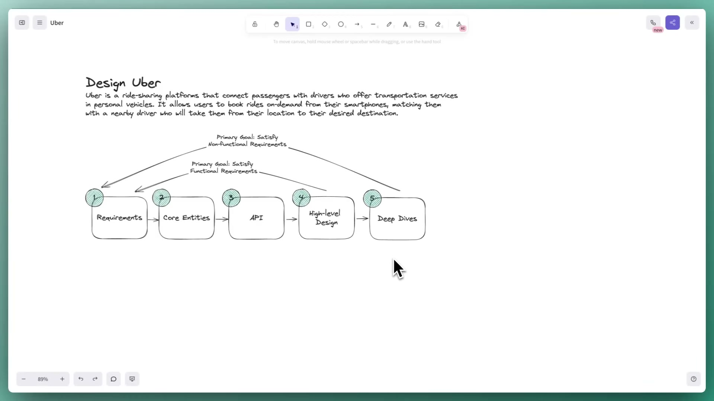
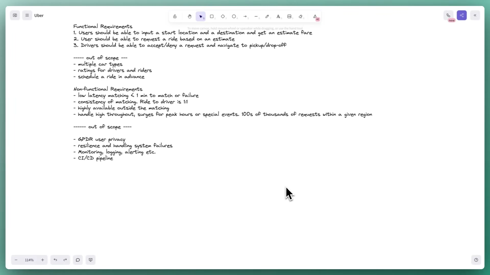
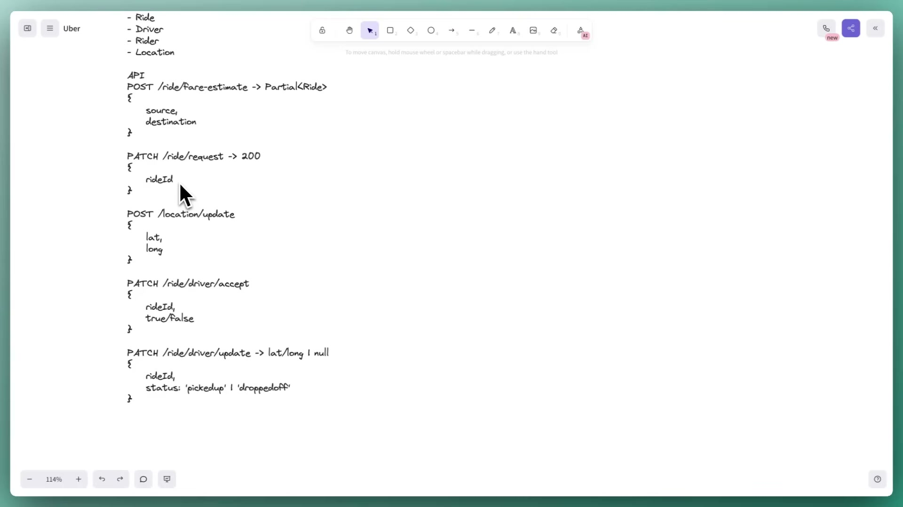
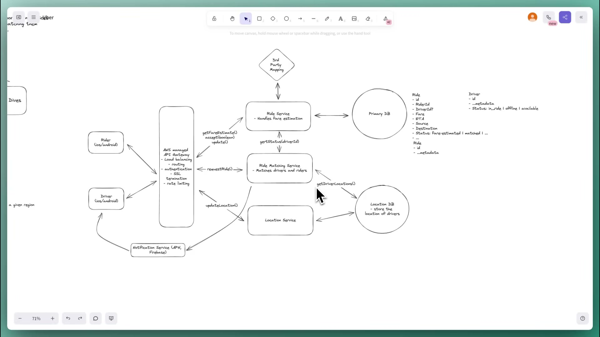
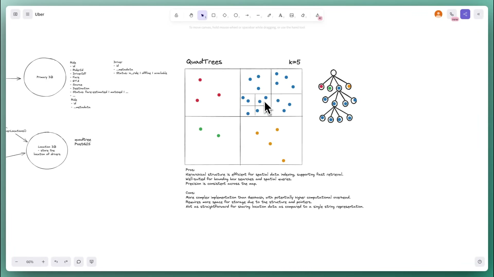
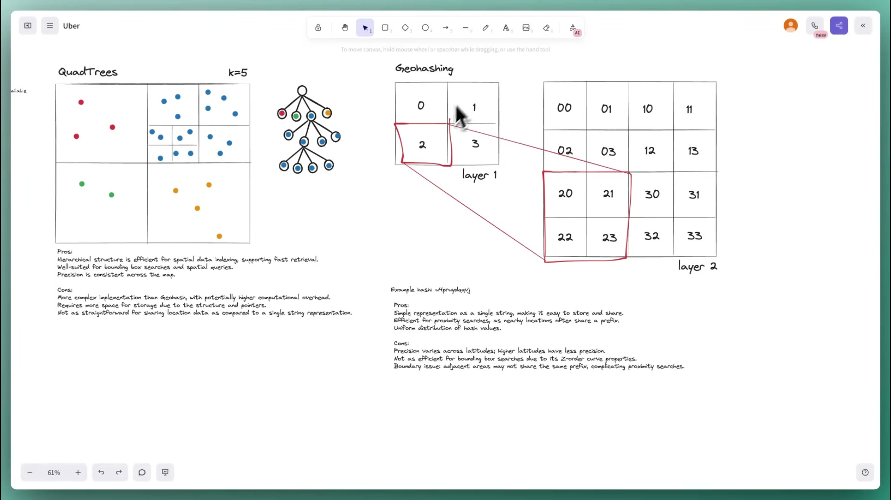
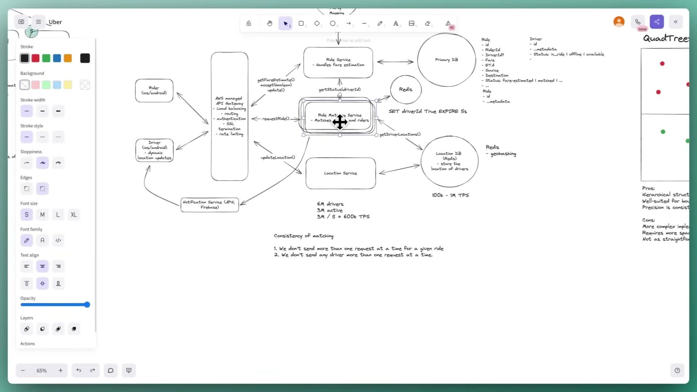
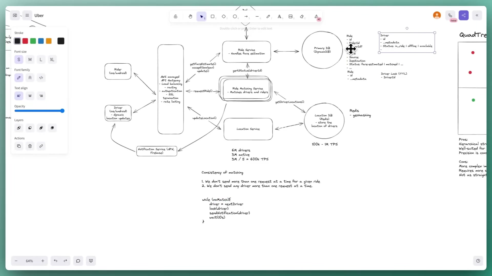
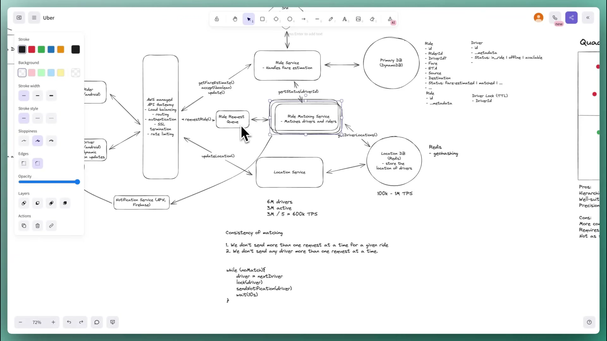

Design Uber
Build the reasoning behind a ride-matching system: define the journeys, trace the APIs, find moving drivers, coordinate competing offers, and handle bursts without losing the matching workflow.
Contents · 14 sections
Start here
This walkthrough designs the interview version of Uber: a mobile rider obtains a fare estimate, requests a ride, and is matched with an available nearby driver, who accepts and travels to pickup and drop-off. Its central challenges are finding moving drivers quickly and coordinating offers across many matching servers. The later discussion adds burst handling and recovery.
Audience: developers preparing for product system design interviews, especially mid-level through staff. Prerequisites: basic HTTP APIs, databases and indexes, caching, queues, and horizontal scaling. The guide explains the spatial indexing and reservation concepts as they arise; no knowledge of Uber's internal systems is assumed.
You will learn to: turn requirements into APIs and data flows; estimate the location-write workload when the number matters; compare ordinary indexes, spatial trees, and geohashes; reduce location traffic with client logic; separate per-ride sequencing from per-driver exclusion; and add queues and regional stacks for bursts and failures.
Original: Design Uber w/ a Ex-Meta Staff Engineer: System Design Interview breakdown, Evan King, Hello Interview, published April 3, 2024; 1 h 03 min 04 sec. Evan introduces himself as a former Meta staff engineer and interviewer and a Hello Interview co-founder. This follows his Ticketmaster walkthrough and shares its temporary-reservation problem.
1. Let each stage justify the next
▶ Revisit 01:51Evan's roadmap has five whiteboard boxes: requirements → core entities → API → high-level design → deep dives. He discusses entities and APIs together as one phase. The simple architecture first satisfies the functional requirements; the deep dives then establish the non-functional qualities. Each stage should have an obvious reason for existing.

Keep the interview moving
He budgets roughly 35 usable minutes after introductions and closing questions. By the start of architecture, aim to have requirements, entities, and APIs established in about 15 minutes; he allows 15–20 minutes for a mid-level candidate. These are his interview guidelines, not a universal company rubric.
At 10:20, he argues against doing capacity calculations just to conclude that the system is large. Defer them until their result changes a decision. Tell the interviewer that preference and check whether they want estimates now. If they do, accommodate them. Later, the 600,000 location updates/second calculation gives a concrete reason to revisit storage and update frequency.
Start with core entities, rather than a fully enumerated schema: the fields become clearer as you follow the flows. Likewise, APIs are a working model. If architecture reveals a missing endpoint, add it. At senior and staff level, avoid spending time writing obvious scalar types; do specify meaningful enums, relationships, or unusual data structures. Partial<Ride> is the speaker's convenient TypeScript-style shorthand, not a required implementation language.
Depth depends on level
| Level | Emphasis in the recording |
|---|---|
| Mid-level | Produce a coherent design satisfying the features; explain components and respond competently to probes about indexing, matching, or scaling. |
| Senior | Proactively explore a couple of difficult areas, especially location storage and matching consistency. Recognize weaknesses and discuss alternatives. |
| Staff+ | Show greater depth and ownership, potentially across more areas. Apply experience to reveal issues and teach the interviewer something useful; the exact deep dives can differ from Evan’s. |
The recording goes further than a typical interview needs. His conclusion explicitly allows a well-reasoned batched spatial database or database status plus cleanup approach to demonstrate useful depth. Memorizing his final component list is not the learning objective.
Takeaway: use the requirements to choose depth, and spend arithmetic and schema detail where they affect the design.
2. Define the product and its invariants
▶ Revisit 03:01Three core user journeys
- Get a fare estimate. Supply a start location and destination; receive a price and ETA. Evan illustrates the familiar experience of seeing an UberX estimate such as $32, then limits this design to one car type.
- Request the estimated ride. Confirm the estimate and start asynchronous matching with a nearby available driver.
- Accept or decline; navigate. The driver responds to an offer, travels to pickup, then to the destination, and reports progress.
Multiple car types, driver/rider ratings, and scheduled rides are explicitly excluded. Naming them demonstrates awareness while keeping the discussion focused. Other interview variants may omit fares or emphasize navigation; agree on the variant before designing it.
Make non-functional requirements specific
| Requirement | Concrete meaning | Where it drives the design |
|---|---|---|
| Low-latency matching | Return a match or failure in under one minute. Failure includes telling the rider there are no available drivers. | Fast spatial queries and a bounded offer workflow. |
| Consistent matching | A ride has at most one assigned driver; a driver has at most one active ride. Also avoid simultaneous competing offers to a driver. | Sequential offers per ride and shared driver reservations. |
| Availability outside matching | Keep the rest of the service available with minimal downtime. | Independent service scaling and regional deployment. |
| Surge throughput | Handle peak hours, stadium exits, concerts, and holidays; the talk imagines hundreds of thousands of requests in one region. | Buffer ride requests while matching capacity scales. |

He invokes the consistency/availability tradeoff specifically for matching, rather than labeling the entire application with one preference. Duplicate assignment is unacceptable in that part of the system. The transcript's early sentence suggesting “multiple drivers” is inconsistent with the board and later explanation; the intended requirement is one-to-one active matching.
Privacy/GDPR, extensive resilience planning, monitoring/logging/alerts, and CI/CD are set outside this interview's main scope. He still discusses worker failure and availability later. These are scope decisions for the exercise; they do not establish a complete operational plan.
Takeaway: “scalable” is too vague. Specify which operation must be fast, which state must be consistent, and what burst the system must absorb.
3. Core entities, schemas, and all five APIs
▶ Revisit 10:20The initial list is Ride, Driver, Rider, Location. Location represents the latest driver coordinates needed for proximity queries. Keeping it conceptually separate highlights a very different workload from ride history.
| Entity | Fields established in the talk | Reason |
|---|---|---|
| Ride | id, riderId, driverId?, fare, ETA, source, destination, status | Created for an estimate; the same record evolves into a matched ride. The driver ID is absent initially. |
| Driver | id, metadata, status; example statuses in_ride, offline, available | Car, plate, image, and other profile metadata matter less here than eligibility. A temporary request-sent state is explored later. |
| Rider | id, metadata, … | Identity and profile/payment-related metadata are mentioned but deliberately not expanded. |
| Location | Latest coordinates associated with a driver | Frequently overwritten data used to select nearby candidates. |
| Driver lock — added later | Driver identifier and temporary reservation | Coordinates concurrent offer senders; Redis and a DynamoDB table are proposed alternatives, with qualifications below. |
API board, transcribed into selectable text
The following preserves the displayed endpoint paths and payload sketches. It is HTTP/pseudocode notation, not executable HTTP, JSON, or a full API specification. Partial<Ride> means the returned subset contains the ride ID, price, and ETA. The board's bare true/false denotes a response decision, not a valid unnamed JSON property.
POST /ride/fare-estimate -> Partial<Ride>
{
source,
destination
}
PATCH /ride/request -> 200
{
rideId
}
POST /location/update
{
lat,
long
}
PATCH /ride/driver/accept
{
rideId,
true/false
}
PATCH /ride/driver/update -> lat/long | null
{
rideId,
status: 'pickedup' | 'droppedoff'
}
What the contracts mean
- Estimate creates state. It is a POST because the server persists a new Ride even if the rider never books. Evan values abandoned estimates as potential analytics input and accepts the extra stored data.
- Request updates that Ride. The PATCH carries the ID returned by estimation. A success response acknowledges the request; it does not mean a driver is already matched. Matching can take up to the one-minute budget. The speaker mentions a generic error status for failure rather than specifying an exhaustive error contract.
- Location updates are independent. The driver pings with coordinates initially every five seconds. The API list may be amended when this dependency becomes clear.
- Accept/decline updates assignment. The ride ID identifies the offer's ride; acceptance eventually sets a driver ID and status in durable storage. The talk is flexible about PATCH versus POST/PUT when discussing persistence details.
- Progress determines the next coordinates. At pickup, update status and return the destination. After drop-off, return no further destination, represented as
null. The acceptance flow also needs the pickup coordinates.
Authenticated identity
At 19:55, Evan explains why he omits a caller-supplied rider/driver ID from these bodies: derive the actor from the authenticated session or JWT carried with the request. Trusting a body field as identity would let a caller claim to be another user. His sketch leaves authentication mechanics abstract.
Takeaway: a quote and a ride share one evolving record in this recording; an asynchronous acknowledgement and a completed match are different outcomes.
4. Walk the architecture one operation at a time
▶ Revisit 20:47The architecture is built by tracing the APIs in order. If each API works end to end, the functional requirements are covered. Initially keep performance and coordination problems visible for the deep dives rather than solving everything before the core flow exists.

Flow A — estimate and persist
- A mobile rider client calls the gateway. The talk supports iOS/Android and explicitly leaves web out of this sketch.
- The gateway routes to the Ride Service. Evan's managed-gateway box also collects authentication, rate limiting, SSL termination, and load-balancing responsibilities. The main point is routing to the right service; he avoids a gateway implementation detour.
- The Ride Service asks a third-party mapping service for travel time between source and destination under current traffic.
- It simplifies fare calculation to a function such as ETA times a rate. Evan explicitly calls this an interview simplification; sophisticated pricing is abstracted away.
- It persists the estimate as a Ride, initially in a fare-estimated state, and returns its ID, fare, and ETA.
The schema grows at the database arrow: add source, destination, rider reference, fare, ETA, and status when they are first needed. Leave uninteresting rider metadata as an ellipsis.
Flow B — get eligible drivers
- The rider confirms the quote and calls request-ride.
- A separate Ride Matching Service handles the asynchronous workflow. Evan separates it because it performs different, more expensive work, scales independently, and can be owned by another team.
- It asks the location store for drivers within a radius around pickup; he gives one, two, or three miles as examples.
- It checks driver status through the Ride Service/primary database and filters out offline or already-in-ride drivers.
- It begins offering the ride to eligible candidates. The ranking/matching algorithm is kept abstract; the walkthrough focuses on proximity, eligibility, and coordination.
Flow C — feed location data
The driver app periodically calls the Location Service, which overwrites the latest position in the location store. Matching reads that store. Separating the position-write path from durable ride records becomes important once the update rate is calculated.
Flow D — offer, accept, and travel
- Matching asks a Notification Service to push an offer to the driver's phone. The board names native Apple/Firebase notifications; the notification service itself is deliberately abstracted as a separate design problem.
- The driver accepts or declines through the API. On acceptance, the Ride Service stores the assigned driver and the updated ride status.
- The client gets the coordinates needed for pickup and uses client navigation. When pickup is reported, the next destination is returned; after drop-off, there is no further location.
- The rider must learn the match result. Later, Evan names notifications or polling as options but does not design that channel in detail.
Takeaway: proximity lookup, driver availability, and accepted ride state have different roles. A nearby point in the location index is only a candidate.
5. Calculate the location workload when it matters
▶ Revisit 32:55At 34:23, the first deep dive returns to low-latency matching. Two questions dominate: can the system ingest every location ping, and can it find nearby drivers quickly?
Assume 6,000,000 total drivers
Assume 3,000,000 simultaneously active (speaker says this may be high)
Each active driver sends one update every 5 seconds
3,000,000 / 5 = 600,000 location updates per secondThese are the recording's illustrative planning assumptions, not current Uber statistics. The number matters because both the Location Service and its datastore must handle this path. It also gives a reason to consider fewer client updates.
Baseline — ordinary coordinate columns
Evan first considers PostgreSQL columns for latitude and longitude and a query bounded above/below and left/right. Ordinary B-tree indexes are not a purpose-built two-dimensional proximity index; broad bounds can still examine many records. The baseline also sends every ping straight to durable storage.
His criticism concerns that simple design under this workload. The recording uses rough PostgreSQL throughput figures of 2,000–4,000 transactions/second and Redis cluster figures of 100,000–1,000,000/second. They are unsupported interview estimates, not reproducible benchmark results or product limits. No machine configuration, payload, durability settings, shard count, or benchmark is supplied. The guide does not use those figures as a sizing guarantee.
Intermediate design — spatial index plus batching
Improve query efficiency using a spatial index, and buffer incoming positions in a queue so they can be written in batches. In Evan's comparison, that reduces the number of database transactions. The cost is location staleness while updates accumulate and ongoing index-maintenance work; batching does not make the underlying position data disappear.
He considers this a reasonable intermediate answer and then asks whether a rapidly changing, latest-position dataset needs that write path. An in-memory geospatial store is his next choice.
Takeaway: solve both ingestion and search. A spatial index alone does not answer the write-load question, and batching buys efficiency by spending freshness.
6. Quadtrees, geohashes, and Redis
▶ Revisit 38:26Quadtrees — subdivide crowded cells
At 38:26, Evan draws a map and a tree. Split a region into four quadrants. With a chosen threshold K = 5, a quadrant with more than five drivers splits into four again. Sparse quadrants remain leaves. The dense blue area splits repeatedly; three red points and two green points do not need further subdivision.
The root represents the full region; its four children represent quadrants. Following the tree identifies smaller cells and the driver lists stored at leaves. The drawing explains a density-adaptive structure: a dense city uses deeper subdivision while a sparse area stays coarse.

The board lists strengths in spatial/bounding-box lookup and weaknesses in implementation complexity, tree/pointer memory, and sharing a structure compared with a compact string. The spoken comparison emphasizes uneven density and the cost of frequent updates. These are useful workload questions, not a proof that every quadtree must be rebuilt on every move.
ST_DWithin supports indexed radius-style searches. Do not translate the drawing into “PostGIS rebuilds an entire quadtree for every update.” See the official spatial indexing workshop. This clarifies the implementation, while retaining the talk's freshness-versus-write-work tradeoff.Geohashes — choose a resolution independently of density
At 42:30, the next diagram repeatedly subdivides all regions. It labels first-level cells 0–3, then cell 2 becomes 20, 21, 22, 23. A further level could turn 20 into 200–203. That is a conceptual illustration of a hierarchical location code; it is not a literal base-32 encoder implementation.
The accompanying explanation introduces base-32 geohash strings: a longer code selects a smaller region; a shared prefix identifies a coarser ancestor region. Computing a code does not require maintaining the illustrated density-adaptive tree. Evan favors that simplicity for drivers whose positions change frequently, even though their distribution is uneven.

| Question | Illustrated quadtree | Illustrated geohash |
|---|---|---|
| What causes refinement? | A density threshold: split crowded cells. | A chosen code length/resolution. |
| What does the speaker favor it for? | Unevenly distributed, less frequently changing locations, illustrated with Yelp-like businesses. | Very frequent location updates, as in this ride-matching exercise. |
| What overhead is emphasized? | Maintaining a tree, pointers, and changing partitions. | Computing/storing compact location codes; proximity queries must handle boundaries. |
| What must the interview answer explain? | Why the spatial structure helps search and what moving points cost. | Why fixed refinement helps the write path and why prefix equality alone is insufficient. |
Details visible on the spatial comparison board
The geohash notes flag that nearby positions can fall across a cell boundary and have different prefixes; a proximity implementation must consider adjacent areas. They also mention Z-order-related bounding-box tradeoffs and latitude-dependent precision. The quadtree notes describe consistent precision, while the geohash notes describe uniform hash distribution; read these as simplified diagram commentary rather than universal properties of geographic data.
Final location choice — Redis geospatial data
Evan replaces the location store with Redis and removes the location batching queue. His rationale is fast in-memory writes and native proximity support. A queue for every location update would add latency without helping the design he has now chosen. This removal is separate from the ride request queue added later.
Adapted example — Redis commands, not demonstrated in the video. This shows the insert/update and radius-query operations the architecture needs. Coordinates below are illustrative; no specific result is asserted. GEOADD takes longitude before latitude. GEOSEARCH has existed since Redis 6.2; the recording does not pin a Redis version. Sources: GEOADD and GEOSEARCH.
GEOADD drivers:region-a -73.9857 40.7484 driver-17
GEOSEARCH drivers:region-a FROMLONLAT -73.9851 40.7488 BYRADIUS 2 mi ASC COUNT 10 WITHDISTThe returned members remain candidates; apply the availability and reservation checks described in the next chapters.
The Uber hexagon aside
Evan briefly recalls an Uber-built hexagonal alternative but expresses uncertainty about the shape. Supplement: H3's official introduction identifies H3 as a hierarchical hexagonal geospatial indexing system developed for Uber's data-science needs. That resolves the name and shape; it does not establish that the production matching system is identical to this interview sketch.
Takeaway: understand refinement, update cost, and boundary handling. Choose a datastore and partition strategy that can support the actual workload.
7. Reduce location traffic with client behavior
▶ Revisit 46:30After improving storage, Evan asks whether all 600,000 pings/second are needed at all. A blunt product choice is to send updates every 10, 15, or 20 seconds, or even every minute. That lowers traffic at the expense of freshness.
The stronger answer is adaptive updates on the driver client:
| Signal | Reasoning in the recording | Tradeoff |
|---|---|---|
| Availability/status | If the driver is not accepting rides, matching has less need for those positions. | Coordinate update policy with what the product is currently doing. |
| Speed and stationary time | A driver parked for 20 minutes does not need to resend an unchanged position every five seconds. | Reduce repeated writes while movement is low. |
| Proximity to demand | A driver far from requests or hot areas can update less often than one near busy pickup locations. | Spend freshness where it can change the match. |
The client is part of the system design. Evan adds dynamic location updates directly to the driver box and keeps the Redis architecture. His suggestion that traffic might fall to 100,000 updates/second or below is illustrative, not a measured outcome.
Supplement — freshness remains explicit. The current companion breakdown describes tracking last-update timestamps and removing stale driver members, for example with a companion time-sorted set and periodic cleanup. That is additional detail beyond the recording. A parked-but-active driver still needs a freshness policy; completely suppressing pings without one can make “stationary” indistinguishable from “disconnected.” The latter observation is an inference from combining adaptive updates with stale-member removal.
Takeaway: lower write load by changing when information is sent, while preserving a clear meaning for a driver's last known position.
8. Coordinate offers and commit one match
▶ Revisit 48:05Two separate exclusion rules
The matching deep dive starts at 48:05. Evan writes:
- A ride should have only one outstanding driver offer at a time.
- A driver should receive only one outstanding ride offer at a time.
The first can be ordinary sequential workflow logic under his assumption that one matching instance owns that ride: get an eligible candidate, offer, wait for an answer or timeout, and continue if needed. He suggests a candidate list such as the top ten nearby drivers.
The second needs coordination between instances. After a Taylor Swift concert, many riders share the same nearest driver. Separate matching servers can all return Driver 1 at the head of their list and each notify that phone. A local mutex or a local “already sent” flag cannot coordinate those servers.
First attempt — shared status and cleanup
Atomically transition a driver's shared status from available to request-sent, then notify them. Other matchers skip that driver. The hard part is making the reservation expire if the driver does not respond.
Evan explores a status-update timestamp and a cron job that finds stale request-sent states and resets them. It works, but recovery runs on the cleanup schedule rather than exactly when the offer expires. His example: a five-second hold with a minute-based cleanup can leave a driver unnecessarily unavailable for roughly another 55 seconds. An in-process timer also cannot safely represent durable cleanup after its server crashes.
Preferred interview answer — an expiring shared reservation
Place a driver-specific lock in Redis with a short TTL. Only a successful claimant should send the offer; the key's expiry allows later claimants when the driver is silent. The talk illustrates a five-second lock but also uses a ten-second wait in its loop. Treat them as alternative teaching values; a real offer must have one consistent deadline.

Evan then proposes consolidating the two Redis roles, or using the primary DynamoDB datastore for a driver-lock table to avoid an extra technology. He favors DynamoDB for this simplified primary model's limited relationship needs and scaling/availability goals. Its TTL semantics require a correction.
The complete on-screen matching loop
while (noMatch){
driver = nextDriver
lock(driver)
sendNotification(driver)
wait(10s)
}
In the explanation, driver acceptance arrives through the Ride Service and updates durable ride/driver status, causing matching to stop. A declined or unanswered offer leads to another candidate. The board is deliberately incomplete pseudocode: it does not show the branch that skips a failed lock acquisition, candidate exhaustion, or a global matching timeout.
Correction — acquiring a lock must be atomic
Do not implement “read whether a driver is locked, then write a lock” as two unguarded operations. Use an atomic conditional claim. The Redis SET reference documents the conditional and expiry options used in this adapted example:
SET driver-lock:driver-17 unique-offer-token NX PX 5000Supplement: NX makes creation conditional and PX sets milliseconds. Use a unique token per claim; notify only after success. Release only if the stored token still matches, using an atomic comparison such as the Lua pattern below. A delayed worker must not delete a newer worker's lock. Redis replication failover can violate single-instance lock exclusion. See Redis's lock documentation. This primitive alone does not establish safe final ride assignment.
if redis.call("get", KEYS[1]) == ARGV[1] then
return redis.call("del", KEYS[1])
else
return 0
endThe Lua pattern is compatible with the recording's older context. Current documentation also describes a newer release command, but it was not demonstrated in this April 2024 video.
Correction — DynamoDB TTL is background deletion
Adapted design rule: make “lock missing or expired” and the replacement with a new owner/expiry one conditional operation. Releases and renewals must check ownership. Define clock/lease assumptions explicitly; the recording does not supply a complete lease implementation.
Supplement — an offer lease is different from an accepted ride
The short lock protects an offer; it must not make a driver available again five seconds into an accepted trip. On acceptance, validate the current offer, its deadline, and the still-unassigned ride; commit ride assignment and driver busy status together. Reject a late acceptance for an offer that has expired or been replaced.
This is an adapted correctness requirement inferred from the video's one-to-one invariant and its expiring offers. One implementation option is conditional updates in a DynamoDB transaction, which can atomically update distinct ride, driver, and offer records in one region. The source supports the transaction primitive; this particular record protocol is an adaptation, not something the speaker implemented. A Redis check followed by unrelated database writes does not itself supply that transaction.
Takeaway: serialize offers per ride, coordinate claims per driver, and make acceptance a guarded durable transition. Expiry solves abandoned offers; durable assignment protects the trip.
9. Buffer ride requests and recover workers
▶ Revisit 58:20The surge discussion introduces a request queue at 58:20. Matching workers can be occupied for much of a minute while drivers respond. When a stadium empties, adding servers may lag the incoming burst.
Add a ride request queue before matching. Incoming requests wait durably while matching workers consume at their available capacity and the fleet scales. This is not a reintroduction of the removed location-write batching queue: the two queues serve different data and latency needs.

Why geographic partitions matter
Evan warns that a hard-to-match request from a remote area can delay easily matched requests from a busy city in a sequential/FIFO processing arrangement. Partition the queue by location so unrelated regions do not wait behind each other. His example goes finer than New York City's boroughs.
That is a locality and head-of-line-blocking argument, not a claim that every FIFO implementation processes only one message globally. Partitioning reduces cross-region interference; it does not make every request within a partition easy to match.
Crash during matching
Do not acknowledge success before the work succeeds. If a worker fails during the long offer process, an unacknowledged request can become eligible for another worker. The new worker can continue the effort instead of silently losing the rider's request. Evan leaves the specific queue product, retry details, and workflow persistence abstract.
Adapted recovery rule: before issuing an offer on a retried job, inspect durable ride state and conditionally claim workflow ownership. If the first worker committed the match but crashed before acknowledging, the retry should recognize that completed state rather than start a second ride. This follows from the researched duplicate-delivery behavior and the video's matching invariant; it is additional design work beyond the loop shown on screen.
The one-minute target includes the backlog
Inference from the recording's requirements: buffering a request prevents an immediate loss but does not guarantee a match within one minute. Queue waiting, candidate lookup, and driver response time all spend the same budget. Bound the job's lifetime and return an explicit failure when it expires. Ten full ten-second offers would already exceed one minute before lookup or queuing overhead, so the example “top ten” list is a pool of candidates, not a promise to wait on all ten.
Takeaway: queues absorb bursts and enable retry; deadline and duplicate-processing rules are still needed for the promised user outcome.
10. Scale the whole system by region
▶ Revisit 60:38The final architecture discussion returns to availability outside matching. Horizontally scale services behind load balancing; scale primary and location storage appropriately. Evan describes regional copies of the overall stack: the Northeast, California/Southwest, and Seattle/Northwest are examples of geographically separate deployments.
That separates local matching workloads, reduces strain on a single stack, and makes geographic queue partitions natural. A traveling user still needs their account information, so he suggests a replica or copy of user data in each region. The recording does not specify cross-region synchronization, routing, failover, or conflict resolution.
His claim that DynamoDB scales “largely indefinitely” is shorthand for a scalable managed store, not an unlimited-capacity guarantee. No table partition plan, quotas, or service sizing is demonstrated. Likewise, duplicating a regional stack does not by itself explain how in-flight matching ownership moves during a failover.
Takeaway: region-local matching is a useful architecture boundary. Shared user identity and in-flight ride ownership still need explicit policies when turning the sketch into an implementation.
11. Recap and decision sheet
The final design has mobile rider/driver clients, a gateway, separate Ride/Matching/Location services, primary ride/driver/rider storage, an in-memory spatial location store, expiring driver-offer reservations, a notification service, third-party maps, a geographically partitioned ride request queue, and regional stacks. The lock-store consolidation is an option subject to the TTL and transaction corrections.
| Problem | Reasoned response | Remember the limit |
|---|---|---|
| Unclear interview scope | Choose three journeys: estimate, request, accept/navigate. | Do not accidentally promise all of Uber. |
| Premature schema or capacity detail | Start with entities; fill fields while tracing flows; calculate when it changes a choice. | The interviewer can request a different approach. |
| 600k location writes/second | Use the assumed active drivers divided by update interval; revisit storage and ping rate. | The number is an exercise assumption. |
| Slow nearby-driver search | Use a spatial index or in-memory GEO store. | Nearby does not imply available or successfully reserved. |
| Dense static data versus moving data | Compare density-adaptive trees with fixed-resolution coding. | PostGIS is not the illustrated quadtree; Redis GEO still maintains an index. |
| Redundant coordinates | Adapt client frequency to movement, availability, and demand. | Keep a freshness/heartbeat policy. |
| One ride, multiple candidate drivers | Sequence offers under one workflow owner. | Retries can create a second worker unless ownership is enforced. |
| Many rides choose one driver | Atomically claim a short-lived driver reservation. | A separate read then write races. |
| Driver never answers | Expire the offer; continue within the matching deadline. | DynamoDB TTL deletion is too delayed to be the timer. |
| Driver accepts late | Validate the current offer and conditionally commit the ride/driver assignment. | Expiry alone does not protect an accepted ride. |
| Traffic spikes or worker crashes | Buffer requests, partition geographically, retry unfinished work. | Use durable state to make repeat processing safe. |
| One overloaded geography | Deploy regional stacks and make user data available where needed. | Cross-region ownership and synchronization are not designed in the talk. |
A practice walkthrough
Close the diagrams and explain one rider's path from quote to drop-off. Then introduce the concert scenario: two matching servers pick the same driver. State exactly which shared transition chooses a winner, what happens when the driver is silent, and what happens when the first worker crashes after acceptance. Finish by explaining where queue waiting fits in the one-minute budget.
At 61:32, Evan reiterates that candidates need appropriate breadth and depth, not every optimization in the recording. Be able to explain a baseline, identify its failure mode, and improve it with a justified tradeoff.
12. Glossary and review questions
| Term | Meaning in this design |
|---|---|
| Functional requirement | Behavior a rider or driver should be able to perform. |
| Non-functional requirement | A measurable quality or invariant: matching latency, consistent assignment, availability, or burst capacity. |
| Core entity | An object exchanged or persisted in the system, before every field is known. |
| Proximity search | Find drivers within a geographic distance of pickup. |
| Spatial index | A structure that narrows spatial candidates without treating every coordinate pair as an unrelated ordinary scalar value. |
| Quadtree | The illustrated hierarchy that recursively divides a two-dimensional region into four children. |
| Geohash | A hierarchical coordinate encoding whose prefix/length selects a geographic region and resolution. |
| TTL / lease | An expiry concept. A lease grants temporary ownership; actual deletion and logical expiration can have different semantics. |
| Atomic claim | A condition check and ownership change that succeed as one indivisible operation. |
| Idempotent processing | Repeated processing has no extra business effect; especially important after uncertain outcomes or message redelivery. |
| Head-of-line blocking | Later work waits behind earlier work that is slow to complete in a shared sequential processing path. |
| Horizontal scaling / regional partitioning | Add service instances, and divide location-dependent work across geographies. |
Why create a Ride when the rider only asks for a quote?
The video chooses one record that evolves from fare-estimated to matched. It avoids a separate fare entity, and abandoned quotes may be useful analytically. The current companion article uses a different model; neither change should be silently substituted for the recording.
What does the 600,000-per-second calculation actually change?
It makes the cost of frequent position writes explicit and motivates a dedicated location path, in-memory spatial storage, and adaptive client updates. It does not establish a benchmark or dictate the primary ride datastore's write rate.
Why does a driver's “available” status fail to prevent two offers?
Two matching servers can read it before either changes it. The transition from available to reserved must be atomic across the shared state, and it must have a defined expiry.
Why is a five-second DynamoDB TTL item an incorrect unlock design?
Expiry does not mean immediate deletion; AWS describes deletion within days. Logical lease eligibility must be evaluated by the claim protocol, not by whether the background TTL service has removed the row.
Why do both a driver reservation and an accepted-ride state exist?
The reservation covers the brief offer window. Once accepted, the driver must remain busy for the trip, beyond that window. Late offer responses must not overwrite a newer reservation or an existing assignment.
A worker commits acceptance and dies before acknowledging the queue. What next?
The request may be delivered again. A replacement must recognize the committed ride and avoid issuing a new offer. This is an implementation extension of the talk's queue recovery idea, using guarded durable state.
Why remove one queue and add another later?
The removed queue batches driver coordinates and adds staleness. The later queue holds ride requests during bursts and supports worker recovery. They have different responsibilities.
What remains intentionally abstract?
Detailed pricing/ML, optimal driver ranking, mapping/navigation internals, notification delivery, rider result transport, a full commit and recovery protocol, production observability/privacy/deployment, and regional data synchronization.
13. Sources, corrections, and inspection notes
Recording and companion material
- Original recording — Hello Interview, Evan King. Main chapter boundaries from its supplied description: 00:00 introduction, 01:51 approach, 03:01 requirements, 10:20 entities/APIs, 20:47 design, 32:55 deep dives, 61:32 conclusion.
- Speaker's written Uber breakdown (redirects to the current problem-breakdown page). It is mutable: its present Fare entity and 10-million-driver / two-million-update scenario differ from the recording's single evolving Ride and three-million-active / 600,000-update scenario. The guide preserves the video and labels the additional stale-location guidance.
- Excalidraw board linked in the recording description. The local recording supplies the inspected board frames; the remote shared board was not used as a separately verified source.
- Previous Ticketmaster walkthrough, referenced for the analogous temporary-reservation problem. No additional Ticketmaster claims are required for this guide.
Primary documentation for the labeled additions
Research checked October 18, 2026. The video does not state concrete server/library versions. These sources clarify technical semantics; newer documentation is not presented as software demonstrated in April 2024.
- PostGIS spatial indexing: GiST/R-tree terminology and indexed distance filtering.
- Redis GEOADD and GEOSEARCH: sorted-set representation, coordinate order, and radius search. The optional example uses established commands, not a video transcription.
- Redis lock guidance: conditional acquisition, ownership-checked release, lease validity, and failover limitations. The guide uses the older Lua release pattern rather than a command introduced after the video.
- Redis Cluster specification: distribution by key, motivating the labeled partitioning extension.
- DynamoDB TTL, distributed locking, and transaction semantics: physical deletion versus logical expiry, guarded claims, and atomic durable assignment as an adaptation.
- H3 introduction and geohash comparison: resolve the hexagon aside and clarify latitude-dependent cell area.
- SQS duplicate delivery and visibility timeouts: a concrete example supporting the labeled retry/ownership caveat. The video itself keeps the queue product abstract.
What was inspected and what remains limited
The full supplied transcript was read, and original English captions were consulted for topic timing. The 1080p local recording was inspected visually through frames at one-minute intervals across its full duration, plus targeted full-resolution frames for the APIs, architecture, spatial diagrams, lock, loop, and queue. The recording contains a whiteboard design demonstration, not a runnable coding demo. All substantive displayed API and pseudocode examples are rendered as selectable text here.
There was no independent continuous audio playback or listening audit in the available tool workflow. Spoken explanations are grounded in the supplied transcript/captions, cross-checked against visible material and primary documentation where ambiguous. Screenshot timestamps are exact extraction positions; chapter links use supplied chapter metadata, and topic links use caption timing or verified nearby frame positions. They point to the relevant discussion, not invented verbatim utterance times.
The API sketches omit validation, complete errors, and implementation boilerplate. The matching loop omits production safety and recovery details. Correctness notes explicitly cover the most consequential gaps; the guide does not claim to have implemented or verified the resulting distributed system.